무선설비산업기사 (2020-06-27 기출문제)
1과목: 디지털 전자회로
1. 무부하시 출력전압이 25[V]인 정전압회로에 임의의 부하를 연결했을 때 20[V]이면 전압 변동률은 몇 [%]인가?
- 10[%]
- 15[%]
- 20[%]
- 25[%]
(정답률: 72%)

2. 전파정류회로에서 실효값을 나타내는 식은?
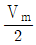
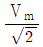
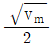
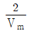
(정답률: 84%)
3. 다음 중 정류회로에서 다이오드의 순방향 저항(rd)에 의해 전압변동률이 제일 큰 것은?
- 반파 정류회로
- 브리지 정류회로
- 반파 배전압 정류회로
- 중간탭 정류회로
(정답률: 74%)
4. 다음 중 활성영역에서 능동 트랜지스터를 동작시키기 위해 요구되는 조건이 아닌 것은?
- 이미터 다이오드는 반드시 순방향 바이어스가 걸려야 한다.
- 베이스전류를 가장 크게 해야 한다.
- 컬렉터 다이오드는 반드시 역바이어스가 걸려야 한다.
- 컬렉터 다이오드 양단에 걸리는 전압은 반드시 항복전압보다 낮아야만 한다.
(정답률: 62%)
5. 다음 그림과 같은 전압궤환 바이어스회로에서 콘덴서 'C'에 대한 설명으로 틀린 것은?
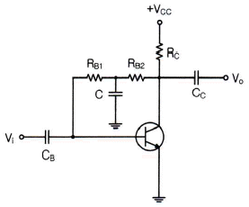
- 교류신호 이득 감소 방지용 바이패스 콘덴서
- 콘덴서 C는 직류적으로 개방(Open)
- 콘덴서 C는 교류적으로 단락(Short)
- 교류신호 입력 시 베이스로 부궤환을 유도키 위한 소자
(정답률: 75%)
6. 전압증폭기의 전압이득이 1,000±100일 때, 이 전압 이득의 변화를 0.1[%]로 하기 위한 부궤환 증폭기의 궤환량 β는 얼마인가?
- 10
- 0.879
- 0.422
- 0.099
(정답률: 77%)
7. B급 푸시풀 전력증폭기에서 평균 직류 컬렉터 전류는 어떻게 되는가?
- 입력신호전압이 커짐에 따라 즐어든다.
- 입력신호전압이 작으면 흐르지 않는다.
- 입력신호전압이 커짐에 따라 증가 된다.
- 입력전압이 대소에 불구하고 항상 일정하다.
(정답률: 73%)
8. 다음 중 가변 직류전원에 의해 주파수 가변이 가능한 것은?
- 수정 발진기
- VCO
- 암스트롱 발진기
- 이상 발진기
(정답률: 66%)
9. 다음 그림과 같은 발진기는?
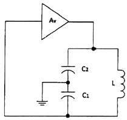
- 콜피츠 발진기
- 하틀리 발진기
- 이상발진기
- 클랩 발진기
(정답률: 78%)
10. 다음 발진회로의 설명으로 틀린 것은?
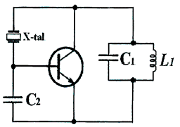
- 수정 진동자는 유도성으로 발진한다.
- Pierce-BC형 발진회로이다.
- 동조회로 LC의 공진 주파수는 발진주파수보다 조금 높게 한다.
- 콜피츠 발진회로를 변형한 회로로 컬렉터와 베이스 사이에 수정전동자를 넣어 발진회로를 구성하였다.
(정답률: 62%)
11. 다음 변조방식 중 아날로그 변조 방식이 아닌 것은?
- PPM
- PAM
- PCM
- PWM
(정답률: 78%)
12. 15[kHz]까지 전송할 수 있는 PCM시스템에서 요구되는 최소 표본화 주파수는?
- 10[kHz]
- 20[kHz]
- 30[kHz]
- 40[kHz]
(정답률: 80%)
13. 다음 중 PPM파를 복조하여 신호파를 얻기 위한 방법으로 알맞은 것은?
- 저역 여파기를 통과시킨다.
- PAM으로 변환하여 저역 여파기를 통과시킨다.
- 가산 회로를 통과시킨 후 Clipper 회로를 통과시키고 여파기를 통과시킨다.
- PWM으로 변환하여 고역 여파기를 통과시킨다.
(정답률: 65%)
14. 진폭 변조에서 변조 지수가 1인 경우 변조 출력은 반송파 전력의 몇 배가 되는가?
- 1.5배
- 2배
- 2.5배
- 3배
(정답률: 59%)
15. 다음 중 톱니파 발생회로에 주로 사용되는 것은?
- Varactor
- MOS FET
- FET
- UJT
(정답률: 63%)
16. 일반적인 무안정 멀티바이브레이터(Unsatable Multivibrator)에서 R1 = R2 = 10[kΩ], C1= C2 = 100[pF]로 하면 출력 신호의 주파수는?
- 0.35[kHz]
- 0.71[kHz]
- 0.35[MHz]
- 0.71[MHz]
(정답률: 53%)
17. 10진수 10을 그레이코드(Gray code)로 변환한 것은
- 1010
- 1110
- 1011
- 1111
(정답률: 69%)
18. 다음 논리회로에서 출력 Y의 방정식을 간략하게 한 것은?
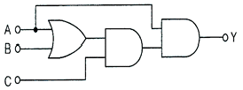
- Y = AC
- Y = ABC
- Y = AB+AC
- Y = AB+BC+AC
(정답률: 65%)
19. 다음의 회로에서 가정용 전원의 주파수 60[Hz]인 정현파를 적용했을 때 최종 구형파의 출력 주파수(fo)는?
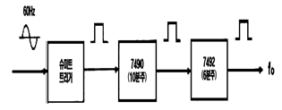
- 0.5[Hz]
- 1.0[Hz]
- 1.5[Hz]
- 2.0[Hz]
(정답률: 69%)
20. 2x4 디코더 회로도로 옳은 것은?
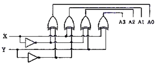
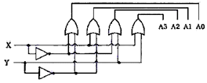
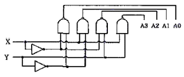
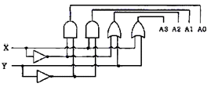
(정답률: 74%)
2과목: 무선통신 기기
21. 중간주파수가 500[kHz]인 슈퍼헤테로다인 수신기에서 희망파 1,000[kHz]에 대한 영상주파수는 얼마인가? (단, 상측 헤테로다인 방식으로 동작한다.)
- 1,500[kHz]
- 2,000[kHz]
- 2,200[kHz]
- 3,200[kHz]
(정답률: 76%)
22. 다음 중 다중 반송파 변조(Multicarrier Modulation)에 대한 설명으로 틀린 것은?
- FFT를 이용하여 고속 구현이 가능
- 전송 신호의 크기가 일정하여 전력 효율이 높음
- 전체 대역폭을 작은 대역폭을 갖는 부채널로 분할
- 등화기를 사용하여 채널의 왜곡을 보상
(정답률: 55%)
23. 다음 중 슈퍼헤테로다인 수신기에서 AGC는 일반적으로 어떠한 작용을 이용한 것인가?
- 궤환 작용
- 발진 작용
- 증폭 작용
- 변조 작용
(정답률: 67%)
24. 주파수 100[MHz]의 반송파를 3[kHz]의 신호파로 FM 변조할 때 최대 주파수 편이가 18[kHz]이다. 변조지수는 얼마인가?
- 3
- 6
- 9
- 42
(정답률: 75%)
25. 다음 중 이득 대역폭(Gain Bandwidth Product)이 갖는 의미로 옳은 것은?
- 증폭기의 증폭 성능을 나타내며 얼마나 넓은 주파수 범위에 걸쳐일정한 이득으로 증폭할 수 있는가를 의미
- 증폭기의 증폭 성능을 나타내며 다음 단과 어느 정도 양호한 이득이 이루어지는가를 의미
- 발진기의 발진 성능을 나타내며 어느 정도 넓은 대역에 걸쳐 안정된 발진이 가능한가를 의미
- 발진기의 발진 성능을 나타내며 어느 정도 양호한 이득으로 발진을 수행하는가를 의미
(정답률: 75%)
26. PCM 송신기의 블록도 순서로 바른 것은?
- LPF → Sampler → Quantizer → Encoder
- LPF → Encoder → Sampler → Quantizer
- LPF → Sampler → Encoder → Quantizer
- LPF → Quantizer → Sampler → Encoder
(정답률: 66%)
27. 100[W] 전력의 반송파를 변조도 80[%]로 진폭 변조하여 전송하고자 할 때 피변조파의 총 전력은?
- 92[W]
- 100[W]
- 132[W]
- 140[W]
(정답률: 64%)
28. 다음 중 QAM과 OFDM을 비교 설명한 것으로 옳은 것은?
- QAM은 단일 반송파를 사용하고 OFDM은 다중 반송파를 사용한다.
- QAM은 멀티캐리어의 일종이고, OFDM은 진폭변조의 개량형이다.
- QAM은 멀티패스에 강하고 OFDM은 멀티패스에 약하다.
- QAM은 레벨이 일정하고 OFDM은 레벨이 변동된다.
(정답률: 76%)
29. 다음 중 위성통신의 다윈접속방식 중 복수개의 반송파를 스펙트럼이 서로 겹치지 않도록 주파수 축상에 배치함으로써 실현되는 다윈 접속방식은?
- 주파수분할 다윈접속(FDMA)
- 시분할 다윈접속(TDMA)
- 부호분할 다윈접속(CDMA)
- 공간분할 다윈접속(SDMA)
(정답률: 68%)
30. CDMA 시스템의 OMNI 기지국에서 처리 이득이 128, 에너지 잡음 밀도가 6[dB]일 때 채널 수는 얼마인가? (단, 음성화율 : 0.45, 주파수 재사용 효율 : 0.6)
- 36 CH
- 48 CH
- 42 CH
- 109 CH
(정답률: 61%)
31. 다음 중 다원 접속 방법에서 이용되는 확산 대역 기법의 종류가 아닌 것은?
- 직접 확산(DS)
- 주파수 도약(FH)
- 위상 도약(SH)
- 시간 도약(TH)
(정답률: 64%)
32. 다음 중 협력 통신(Cooperative Communication)으로 개선된 기능은?
- 송신 장치
- 수신장치
- 안테나
- 교환장치
(정답률: 68%)
33. 다음 중 무선장비 선정 절차에 들어가지 않는 사항은 무엇인가?
- 전송 구간별 회선용량
- 전송망의 성능 및 요구 품질기준
- 사용자의 생활 패턴
- 전송로 전파전파 특성 분석
(정답률: 83%)
34. 다음 중 영상방송용 송·수신 중계기스템의 전송방식이 아닌 것은?
- 마이크로웨이브 전송방식
- SSB-SC(Single Side Band Suppressed Carrier) 전송방식
- SNG(Satellite News Gathering) 전송방식
- 광케이블 전송방식
(정답률: 76%)
35. 다음 중 태양전자에 대한 설명으로 틀린 것은?
- 태양전지의 기관 종류에는 단결정 실리콘 웨이퍼가 있다.
- 태양전지는 태양광의 광전효과를 이용하여 전기를 생산한다.
- 태양전지의 양단에 외부도선을 연결하면 P형 쪽의 전자가 도선을 통해 N형 쪽으로 이동하게 되면서 전류가 흐르게 된다.
- 태양전지 에너지원은 청정, 무제한이다.
(정답률: 77%)
36. 다음과 같은 직류부하용 독립형 태양발전설비의 구성도에 적합한 장치의 명칭은?
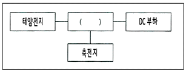
- 발전기
- 인버터
- 정류기
- 전력조정기
(정답률: 62%)
37. 다음 중 무선통신망에 사용되는 전원설비를 개통 순서에 따라 올바르게 나열한 것은?
- 전력량계-주분전함-정류기-통신장비
- 전력량계-정류기-주분전함-통신장비
- 정류기-주분전함-전력량계-통신장비
- 정류기-전력량계-주분전함-통신장비
(정답률: 69%)
38. 다음 중 수신 한계 레벨이 가장 낮은 조건은?
- 대역폭이 넓고 수신기 잡음지수(NF)가 큰 것
- 대역폭이 좁고 수신기 잡음지수(NF)가 작은 것
- 대역폭이 넓고 수신기 잡음지수(NF)가 작은 것
- 대역폭이 좁고 수신기 잡음지수(NF)가 큰 것
(정답률: 62%)
39. 특성임피던스(Zo)가 75[Ω]인 선로 종단에 신호를 인가한 후 선로상의 파형을 측정한 결과 최고전압이 25[V], 최저전압이 5[V]일 경우, 이 선로의 전압정재파비(VSWR)는?
- 4
- 5
- 6
- 8
(정답률: 73%)
40. 다음 중 측정기기 사용법에 대한 설명으로 틀린 것은?
- 전원을 연결하기 전에 먼저 전원공급장치의 출력전압과 측정기기의 정격전압이 같은지 확인한다.
- 측정 전에 측정기기의 지침이 '0'에 있는지 확인한다.
- 측정하기 전에 먼저 측정기기의 측정범위 설정 스위치가 적절한 범위에 있는지 확인한다.
- 측정범위를 모를 때는 측정범위 설정 스위치를 제일 낮은 범위로 설정하고 측정을 시작한다.
(정답률: 82%)
3과목: 안테나 개론
41. 주파수 150[kHz]의 무선통신에서 정전계, 유도 전자계, 복사전자계가 같아지는 거리는 안테나로부터 약 얼마의 거리인가?
- 320[m]
- 500[m]
- 650[m]
- 770[m]
(정답률: 69%)
42. 다음 중 파동의 전파속도에 대한 설명으로 옳은 것은?
- 투자율이 클수록 증가한다.
- 유전율이 클수록 증가한다.
- 언제나 일정하다.
- 파동의 전파속도는 진동수와 파장의 곱에 비례한다.
(정답률: 74%)
43. Maxwell 방정식을 이루는 법칙이 아닌 것은?
- 페러데이(Faraday) 법칙
- 암페어(Ampere) 법칙
- 스넬(Snell) 법칙
- 가우스(Gauss) 법칙
(정답률: 78%)
44. 다음 중 안테나와 급전선 간 부정합시 문제점이 아닌 것은?
- 송신기의 동작이 불안정해진다.
- 반사손실(부정함손실)이 증가한다.
- 급전선의 절연이 파괴된다.
- 최대 전송전력이 증가한다.
(정답률: 77%)
45. 다음 중 전력과 정재파비(VSWR) 관계에서 VSWR=1.5이면 공급전력의 몇 [%]가 부하에서 소모되는가? (단, 송전단 공급전력은 정합된 경우로 가정함)
- 81[%]
- 86[%]
- 91[%]
- 96[%]
(정답률: 66%)
46. 다음 중 투과계수에 대한 설명으로 옳은 것은?
- 투과 전압을 입사 전압으로 나눈 값이다.
- 특성 임피던스를 부하 임피던스로 나눈 값이다.
- 진행파와 반사파의 크기 비율이다.
- 임피던스 부정함을 일컫는 용어이다.
(정답률: 63%)
47. 다음 중 동축 급전선에 대한 설명으로 틀린 것은?
- 평형 2선식 급전선에 비해 특성 임피던스가 높다.
- 주파수가 높아져도 급전선에서의 전파 복사가 없다.
- 동일 전력인 경우 선간 전압이 낮아도 된다.
- 대 전력용으로 사용하기 위해서는 동축 케이블의 내경 및 외경을 크게 한다.
(정답률: 59%)
48. 도파관에 전력을 급전하거나 반대로 전력을 얻어 내는 것을 무엇이라 하며, 일반적으로 무엇을 사용하는가?
- 도파관 여진 – 동축케이블
- 도파관 자려 – 동축케이블
- 도파관 여진 – 평행2선식
- 도파관 자려 – 평행2선식
(정답률: 74%)
49. 다음은 미소다이폴 안테나의 전계를 표시한 식이다. 각 항의 성분으로 맞게 표시된 것은? (단, r은 거리, K는 상수 이다.)
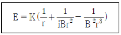
- 1항: 정전계, 2항: 유도계, 3항: 복사계
- 1항: 유도계, 2항: 정전계, 3항: 복사계
- 1항: 복사계, 2항: 유도계, 3항: 정전계
- 1항: 복사계, 2항: 정전계, 3항: 유도계
(정답률: 67%)
50. 150[Ω]의 저항, 0.4[μF]의 커패시터 그리고 값을 모르는 인덕터가 직렬로 연결되어 있는 회로가 356[Hz]에서 공진할 경우 인덕터의 값은 얼마인가?
- 0.5[H]
- 1.5[H]
- 2.5[H]
- 3.5[H]
(정답률: 46%)
51. 10[V/m]를 [dB]로 표현하면?
- 20[dB]
- 70[dB]
- 140[dB]
- 160[dB]
(정답률: 55%)
52. 다음 중 단일 지향성으로 수신전용 안테나는?
- Beverage 안테나
- Adcock 안테나
- Loop 안테나
- Bellini-Tosi 안테나
(정답률: 58%)
53. 다음 중 폴디드(Folded) 다이풀 안테나에 대한 설명으로 틀린 것은?
- Q가 높아서 협대역 특성을 가진다.
- 실효길이는 반파장 다이폴 안테나의 약 2배이다.
- 전계강도, 이득, 지향성은 반파장 다이폴 안테나와 동일하다.
- 반파장 다이폴 안테나에 비해서 도체의 유효 단면적이 크고 복사저항이 크다.
(정답률: 60%)
54. 안테나 접지방식 중 방사상 접지에 대한 설명으로 틀린 것은?
- 대규모 방송국에 사용된다.
- 지하 0.3[m]~1[m] 정도에 설치된다.
- 중파 방송용 안테나에 사용된다.
- 접지저항은 5[Ω] 정도이다.
(정답률: 64%)
55. 지표파와 E층 반사파의 간섭에 의해 양청구역(Service Area)이 제한되는 방송파는?
- 중파
- 단파
- 초단파
- 마이크로파
(정답률: 57%)
56. 다음 중 태양 흑점의 수에 따른 전리층의 전리 현상으로 옳은 것은?
- 흑점 수가 증가할수록 전리 현상이 커진다.
- 흑점이 없으면 전리 현상은 '0'이 된다.
- 흑점 수가 증가할수록 전리층의 전자밀도는 감소한다.
- 흑점은 전리층에 영향을 미치지 않는다.
(정답률: 73%)
57. 다음 중 페이딩에 대한 설명으로 틀린 것은?
- 공간파와 지표파의 간섭에 의해서 생긴다.
- 주기가 느리고 규칙적으로 나타난다.
- 전파의 세기가 크게 변동된다.
- 단파 통신에 많이 나타난다.
(정답률: 75%)
58. 다음 중 전리층 전파에서 발생하는 페이딩 현상을 방지하는 방법이 아닌 것은?
- 주파수 다이버시티
- 공간 다이버시티
- 편파 다이버시티
- 변조 다이버시티
(정답률: 62%)
59. 대기 중의 와류에 의하여 유전율이 불규칙한 공기뭉치가 발생함에 따라 입사 전파의 산란에 의해서 발생하는 페이딩은?
- 감쇠형 페이딩
- 신틸레이션 페이딩
- K형 페이딩
- 덕트형 페이딩
(정답률: 62%)
60. 다음 중 장거리 통신에서 장파와 비교한 단파의 특징에 대한 설명으로 틀린 것은?
- 페이딩이 발생하기 쉽다.
- 공전의 영향을 받기 쉽다.
- 안테나를 소형으로 사용하기 용이하다.
- 주로 F층 반사파를 이용한다.
(정답률: 58%)
4과목: 전자계산기 일반 및 무선설비기준
61. 컴퓨터의 하드웨어 구성 중 중앙처리장치에 해당되는 것은?
- 제어장치
- 입출력장치
- 보조기억장치
- 주기억장치
(정답률: 68%)
62. 다음의 보조기억장치 중 가상메모리(Virtual Memory)로 사용한다면 가장 우수한 것은?
- 자기디스크(Magnetic Disk Unit)
- 자기드럼장치(Magnetic Drum Unit)
- 자기테이프(Magnetic Tape)
- CCD 기억장치(Charge Coupled Device Memory)
(정답률: 71%)
63. 2진수 000101112을 10진수, 8진수, 16진수로 표현한 것은?
- (23)10, (27)8, (17)16
- (23)10, (28)8, (18)16
- (33)10, (29)8, (19)16
- (33)10, (30)8, (20)16
(정답률: 76%)
64. 다음 중 바이너리(Binary) 연산을 행하는 것은?
- OR
- Shift
- Rotate
- Complement
(정답률: 77%)
65. 다음 중 컴퓨터에서 한 번에 처리할 수 있는 명령의 단위를 Word라 할 때, 풀 워드(Full-Word)의 Byte 수는?
- 2[byte]
- 4[byte]
- 8[byte]
- 16[byte]
(정답률: 58%)
66. 10진수 9를 그레이코드로 변환한 결과로 옳은 것은?
- 1100
- 1101
- 1110
- 1111
(정답률: 70%)
67. 운영체제의 기능 중 프로세서 상태에 따른 특성이 다른 것은?
- 활동 상태(Active, Swapped-in) - 기억장치를 할당 받은 상태
- 지연 대기 상태(Suspended Blocked) - 기억장치를 할당받은 상태
- 준비상태(Ready) - 기억장치를 할당 받은 상태
- 지연 준비 상태(Suspended Ready) - 기억장치를 잃은 상태
(정답률: 63%)
68. CPU에서 처리되는 작업 중 메모리 장치 접근에 지나치게 페이지 폴트가 발생하여, 프로세스 수행에 소요되는 시간보다 페이지 교환에 소요되는 시간이 더 커지는 현상은?
- 워킹 세트(Working set)
- 세마포어(Semaphore)
- 교환(Swapping)
- 스레싱(Thrashing)
(정답률: 70%)
69. 다음 중 태스크별 고유의 시간제약 이내에 확실한 출력처리가 필요한 국방, 항공분야 시스템에 적합한 운영체제는?
- 일괄처리 운영체제
- 대화형 운영체제
- 실시간 운영체제
- 분산 운영체제
(정답률: 79%)
70. 다음 중 C 언어의 변수에 대한 설명으로 틀린 것은?
- 변수는 값을 저장하는 기억장소의 주소, 길이, 타입의 세가지 속성을 지닌다.
- 변수 이름은 영어 알파벳 문자나 밑줄 문자(_)로 시작해야 한다.
- 변수 이름의 영문 대문자와 소문자는 서로 구별되지 않는다.
- C 언어의 키워드는 변수 이름으로 사용될 수 없다.
(정답률: 82%)
71. 전파법에서 정의 한 '주파수할당'을 옳게 설명한 것은?
- 특정한 주파수를 이용할 수 있는 권리를 특정인에게 주는 것을 말한다.
- 무선국을 허가함에 있어 당해 무선국이 이용할 특정한 주파수를 지정하는 것을 말한다.
- 무선국을 운용할 때 불요파 발사를 억제하기 위한 주파수를 지정하는 것을 말한다.
- 설치된 무선설비가 반응할 수 있도록 필요한 주파수를 지정하는 것을 말한다.
(정답률: 73%)
72. 과학기술정보통신부장관은 주파수의 이용실적이 낮은 경우 주파수 회수 또는 주파수 재배치를 할 수 있다. 다음 중 주파수 이용실적의 판단기준이 아닌 것은?
- 해당 주파수의 이용 현황 및 수요 전망
- 전파이용기술의 발전 추세
- 국제적인 주파수의 사용동향
- 주파수의 양도와 임대 실태
(정답률: 62%)
73. 다음 중 전파감시업무에 해당되지 않는 사항은?
- 무선국에서 사용하고 있는 주파수의 편차·대역폭 등 전파의 품질측정
- 혼신을 일으키는 전파의 탐지
- 허가를 받지 아니한 무선국에서 발사한 전파의 탐지
- 유선·무선통합통신에서 발사한 전파의 전송품질 측정
(정답률: 63%)
74. 과학기술정보통신부장관이 수행하는 전파 감시의 목적으로 볼 수 없는 것은?
- 전파의 효율적 이용 촉진을 위하여
- 혼신의 신속한 제거를 위하여
- 전파 이용 질서의 유지 및 보호를 위하여
- 주파수에 대한 사용료를 부과, 징수하기 위하여
(정답률: 78%)
75. 과학기술정보통신부장관이 전파산업 등의 기술개발의 촉진을 위하여 추진하여야 할 사항이 아닌 것은?
- 기술수준의 조사·연구개발 및 개발기술의 평가·활용
- 기술의 협력·지도 및 이전
- 국제기술표준과의 연계 공유개발
- 기술정보의 원활한 유통
(정답률: 61%)
76. 다음 중 정보통신공사에서 감리 업무가 아닌 것은?
- 시공관리
- 품질관리
- 안전관리
- 인력관리
(정답률: 77%)
77. 다음 중 대통령령으로 정하는 주요 방송통신사업자에 해당하는 사항은?
- 회선 수가 20만 이상인 자
- 회선 수가 30만 이상인 자
- 회선 수가 40만 이상인 자
- 회선 수가 50만 이상인 자
(정답률: 71%)
78. 다음 중 무선설비기준에서 수신설비가 갖추어야 할 충족조건이 아닌 것은?
- 감도는 낮은 신호입력에도 양호할 것
- 내부잡음이 클 것
- 수신주파수는 운용범위 이내일 것
- 선택도가 클 것
(정답률: 81%)
79. 다음 중 괄호 안에 알맞은 것은?
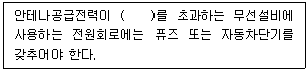
- 70와트
- 50와트
- 30와트
- 10와트
(정답률: 66%)
80. 다음 중 무선설비의 기술기준에서 요구하는 변조특성 및 안테나계의 조건으로 알맞지 않은 것은?
- 반송파가 주파수 변조 할 때에는 최대주파수편이의 범위를 초과하지 아니할 것
- 안테나는 무선설비를 작동할 수 있는 최소 안테나이득을 가질 것
- 정합은 신호의 반사손실이 최대화되도록 할 것
- 지향성은 복사전력이 목표하는 방향을 벗어나지 아니하도록 안정적일 것
(정답률: 72%)